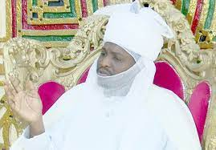

Hawan Sallah is a festival of lights. Hawan Sallah symbolises the unity
Muhammad Hameem Nuhu Sunusi CFR (born February 26, 1979), is a Nigerian monarch who is the current Emir of Dutse, the capital city of Jigawa State in the Northern Nigeria. He was appointed as the 22nd Emir of Dutse in 2024, following the death of his father, Nuhu Muhammad-Sanusi, who was the 21st Emir of Dutse He spent his early years in Kano State before relocating to Jigawa in 1995, following his father's ascension to the position of Emir of Dutse.
Emir of Dutse

Places to visit